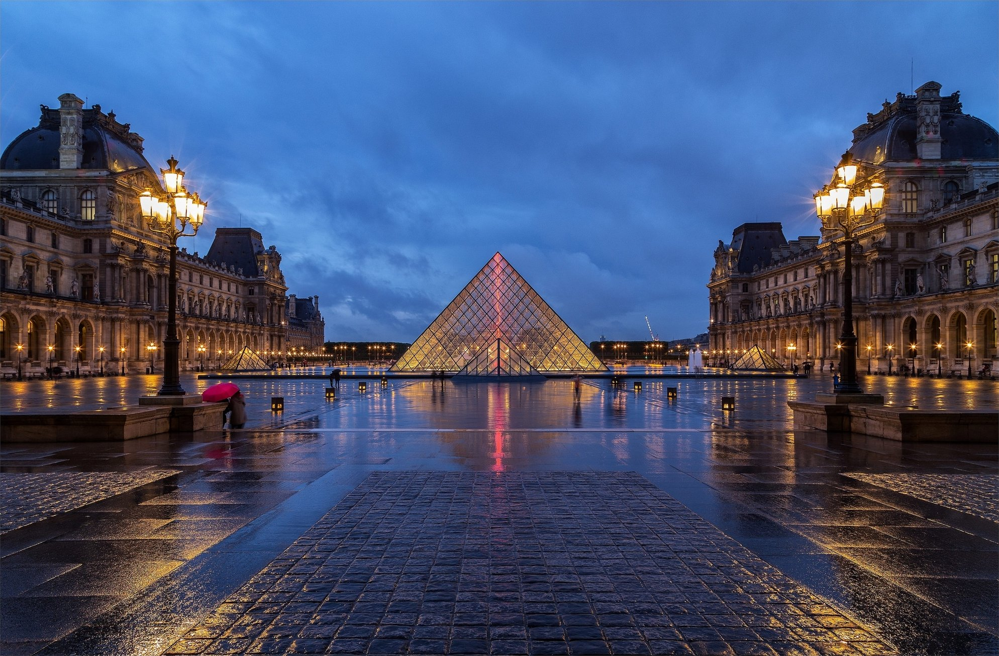

О Париже
Париж – столица Франции. Это политический, административный и экономический центр государства. Париж – это один из самых больших городов мира. В нем насчитывается почти 15 миллионов жителей, включая города и поселки, которые входят в регион Парижа. Он расположен на обоих берегах Сены, которые соединяются приблизительно 34 мостами. На левом берегу Сены расположен известный Латинский квартал со своей главной улицей – бульвар Сен-Мишель или «Бульмиш» как его называют студенты. В центре квартала находится Сорбонна – университет Франции. В южной части Латинского квартала находится университетский городок, центр умственных и моральных связей между молодежью всех наций. Недалеко расположен Пантеон, в котором сохраняются захоронения Руссо, Виктора Гюго, Поля Лянжевена, Вольтера, Эмиля Золя и других известных людей. На передней части сооружения можно прочитать: «Великим людям Родина благодарна». Посреди Сены видно остров Сите, колыбель Парижа с собором Нотр-Дам – это чудесная церковь в готическом стиле, каждый камень которой напоминает многочисленные события истории Франции.
Достопримечательности
Эйфелева башня
Сегодняшний Париж просто невозможно представить без знаменитой «Железной Леди».
Люксембургский сад
Этот городской оазис с фруктовым садом, пасекой, оранжереей, каштановыми рощами и пышными газонами занимает особое место в сердцах парижан.